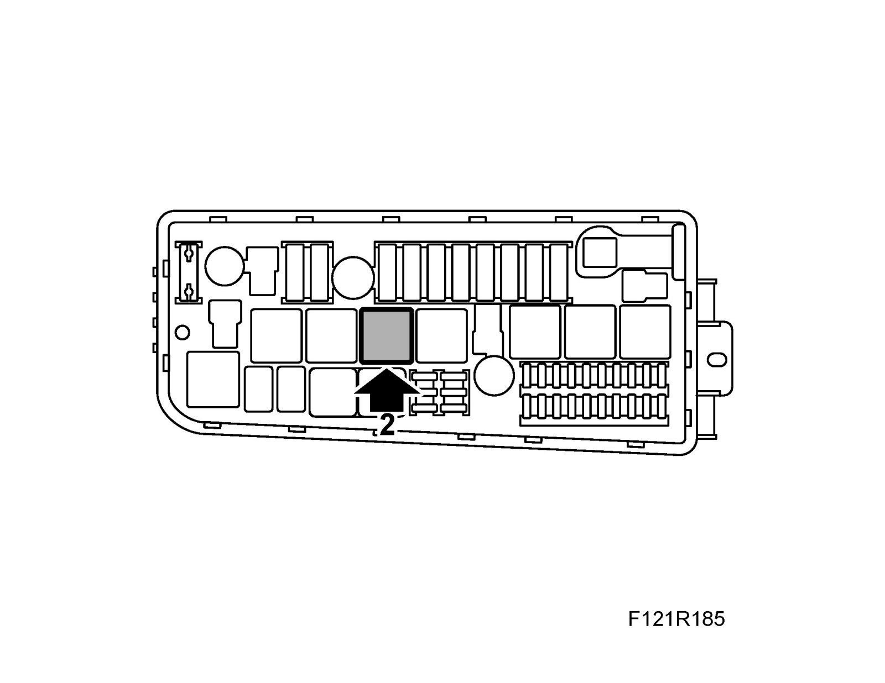
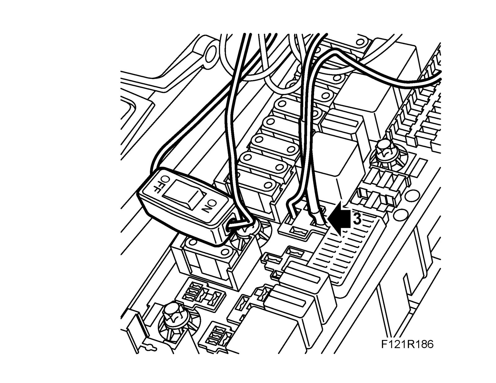
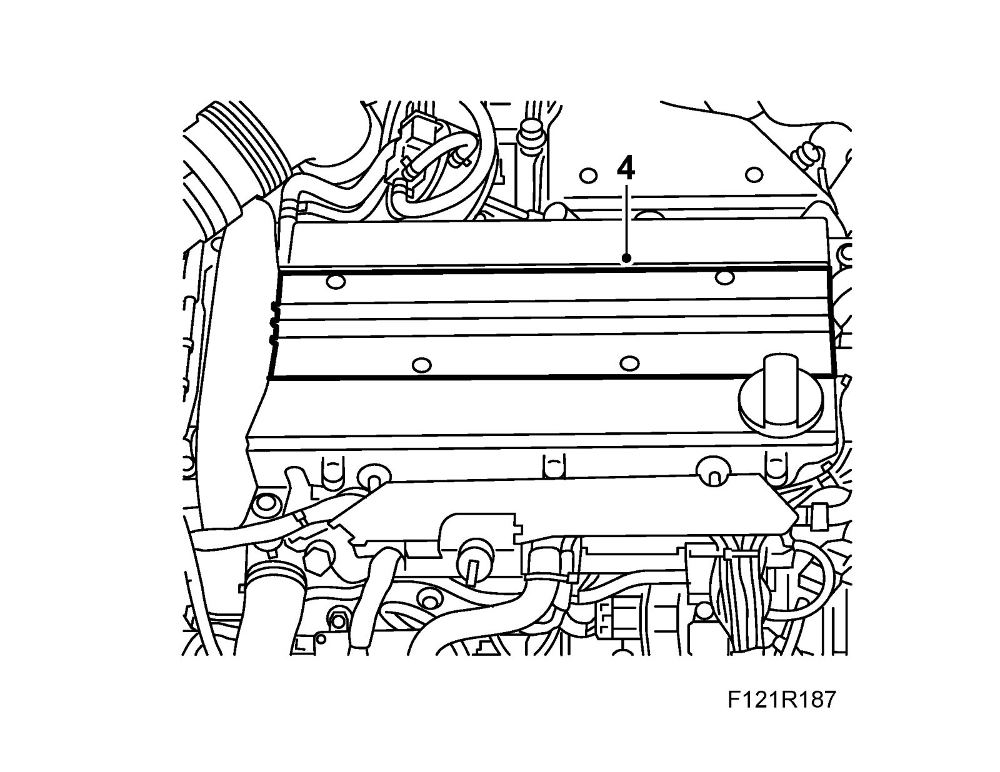
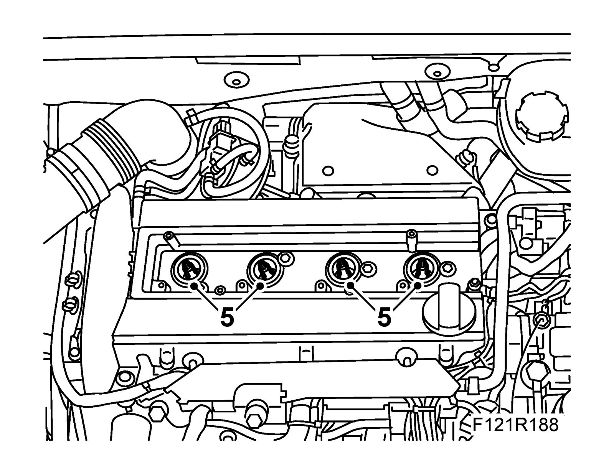
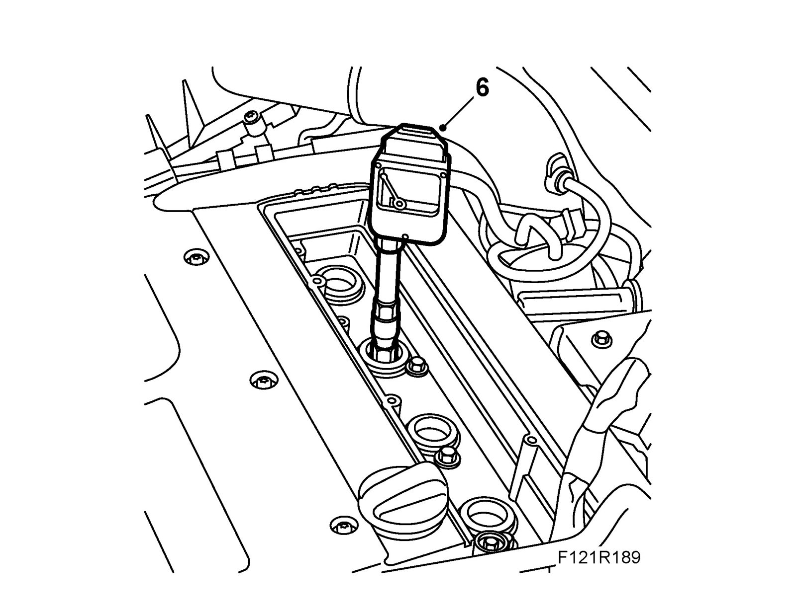
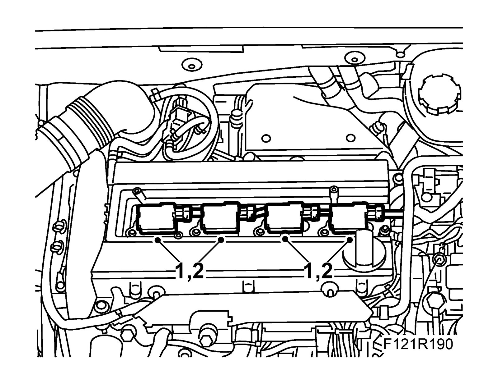

Compression Check: Testing and Inspection
Engine compression testTo remove
1. Man: Put the gear lever in neutral. Aut: Put the selector lever in position P. Remove the key from the ignition switch.
2. Remove relay no. 8 in the Underhood electrical centre 342.

3. Connect 83 93 886 Diagnostics cable, LH system to relay holder sleeves 87 and 30. Make sure that the switch is in the OFF position.

4. Remove the cover over the ignition coils, undo the ignition coils and move them aside.

5. Remove the spark plugs.

6. Fit the Motometer compression tester for petrol engines to cylinder 1 with a new card.

7. Run the starter motor using the test lead switch until the needle stops rising.
8. Repeat the measurement procedure on the other cylinders. For minimum compression pressure, see General data.
To fit
1. Fit the spark plugs.
Tightening torque 20 Nm (15 lbf ft).

2. Fit the ignition coils.
Tightening torque 8 Nm (6 lbf ft).
3. Fit the cover over the ignition coils.
4. Remove the test cable and put back relay no. 8.